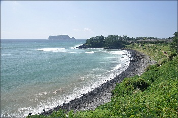
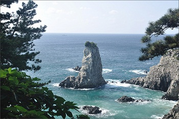

외돌개를 출발하여 법환포구를 경유해 월평포구까지 어어진 해안올레. 올레인들이 가장 아끼고 자연생태길인 '수봉로'를 만날 수 있다. 수봉로는 세 번째 코스 개척 시기인 2007년 12월, 올레지기인 '김수봉'님이 염소가 다니던 길에 직접 삽과 곡괭이만으로 계단과 길을 만들어서 사람이 걸어다닐 수 있도록 한 길이다.
패스포트 스탬프 확인 장소
시작 외돌개 제주 올레 안내소
중간 강정 올레 쉼터
종점 월평 송이 슈퍼
난이도 : 상 총 16.4km(4~5시간)
수봉로는 언덕길이고 일강정 바당올레에서 서건도 사이 바윗길이 험한 편이다.

